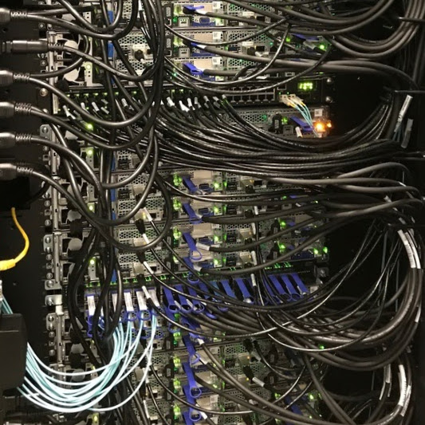

Services
A one-stop shop for all our scientific computing needs
Compute
All the resources you need in one place: compute nodes, GPUs, large memory nodes, blazing fast interconnect, parallel filesystems, and more!
Explore
Sherlock provides all the software tools and storage resources you'll need to explore and analyze your research data.
Discover
With a whole range of computational tools at your fingertips, scientific breakthroughs will just be a batch job away.
In a nutshell
All about Sherlock
Why should I use Sherlock?
Using Sherlock for your work provides many advantages over individual solutions: hosted in an on-premises, state-of-the-art datacenter, the Sherlock cluster is powered and cooled by installations that are optimized for scientific computing.
On Sherlock, simulations and workloads benefit from performance levels that only large scale HPC systems can offer: high-performance I/O infrastructure, petabytes of storage, large variety of hardware configurations, GPU accelerators, centralized system administration and management provided by the Stanford Research Computing Center (SRCC).
Such features are not easily accessible at the departmental level, and often require both significant initial investments and recurring costs. Joining Sherlock allows researchers and faculty members to avoid those costs and benefit from economies of scale, as well as to access larger, professionally managed computing resources that what would not be available on an individual or even departmental basis.
Oh, and also, because even Richard Hendricks wanted to use it! Yes, our very Sherlock was featured in HBO's Silicon Valley Season 4 finale. So, if Richard needs Sherlock, it must be pretty darn good, right? ;)
{kind=link}
How much does it cost?
Sherlock is free to use for anyone doing sponsored research at Stanford. Any faculty member can request access for research purposes, and get an account with a base storage allocation and unlimited compute time on the global, shared pool of resources.
Stanford Research Computing provides faculty with the opportunity to purchase from a catalog a recommended compute node configurations, for the use of their research teams. Using a traditional compute cluster condominium model, participating faculty and their teams get priority access to the resources they purchase. When those resources are idle, other "owners" can use them, until the purchasing owner wants to use them. When this happens, those other owners jobs are killed to free up resources. Participating owner PIs also have shared access to the original base Sherlock nodes, along with everyone else.
How big is it?
Quite big! It's actually difficult to give a precise answer, as Sherlock is constantly evolving with new hardware additions.
As of mid-2017, there were about 180 shared compute nodes available to all researchers, and more than 900 additional nodes available to Sherlock owners, faculty who have augmented the cluster with their own purchases.
For more details about Sherlock size and technical specifications, please refer to the tech specs section of the documentation. But with a computing power over 1 Petaflops, Sherlock would have its place in the Top500 list of the 500 most powerful computer systems in the world.
Ok, how do I start?
You can request an account right now, take a look at the documentation, and drop us an email if you have any question.
I want my own nodes!
If you're interested in becoming an owner on Sherlock, and benefit from all the advantages associated, please take a look at the catalog of configurations and contact us at srcc-support@stanford.edu to let us know you're interested and we'll get back to you.
Timeline
A little bit about Sherlock's history
-
2012-2014
Research Computing early days
With very limited physical space for server hosting, no shared campus HPC resources, and only 3 staff members, Research Computing took off. Construction of our dedicated research datacenter started in July.
-
January 2014
Sherlock is born
With an initial seed of 120 nodes funded by the University Provost, Sherlock opened for production and started running its first jobs. More than 15 million jobs have been executed since then!
-
December 2014
First major expansion
During the first year, more than 200 nodes have been added to Sherlock, funded by several PIs from many different Schools and Departments
-
December 2016
Sherlock reaches capacity
Sherlock reached 850 compute nodes, which maxed out its initial Infiniband fabric capacity. As demand for more compute power continued increasing, a new fabric has been started to continue growing. A new Sherlock was on its way!
-

July 2017
Sherlock 2.0
After a complete refresh of the hardware, platform, software and services, Sherlock 2.0 opens to all users
-

July 2018
Sherlock is whole again
The original Sherlock 1.0 nodes are migrated to the new Sherlock 2.0 environment, and Sherlock becomes a unique cluster again, featuring over 1,200 nodes, 22,000+ CPU cores, close to 700 GPUs, and providing over 1.5 PFlops of compute power to the Stanford research community
-
Come
join us
today!